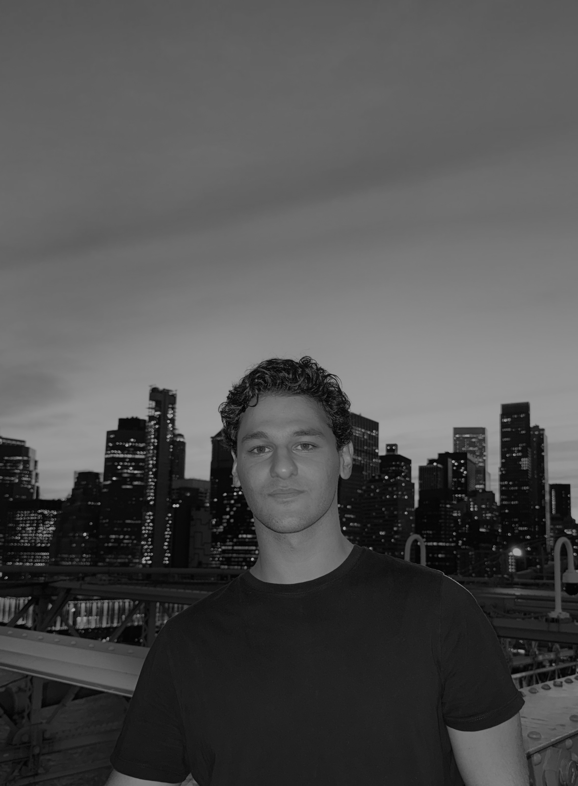
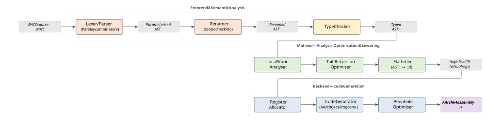
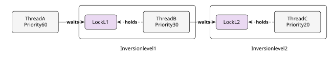
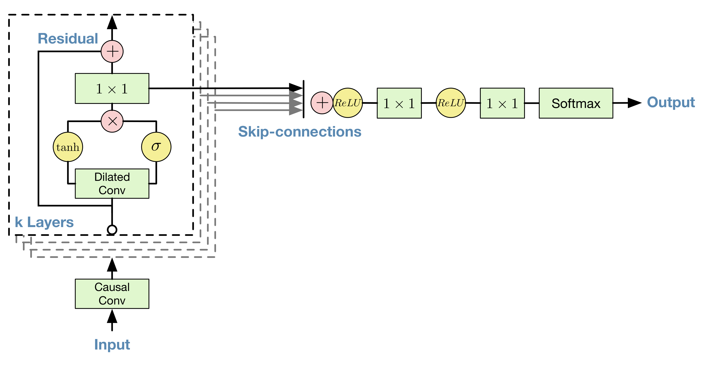
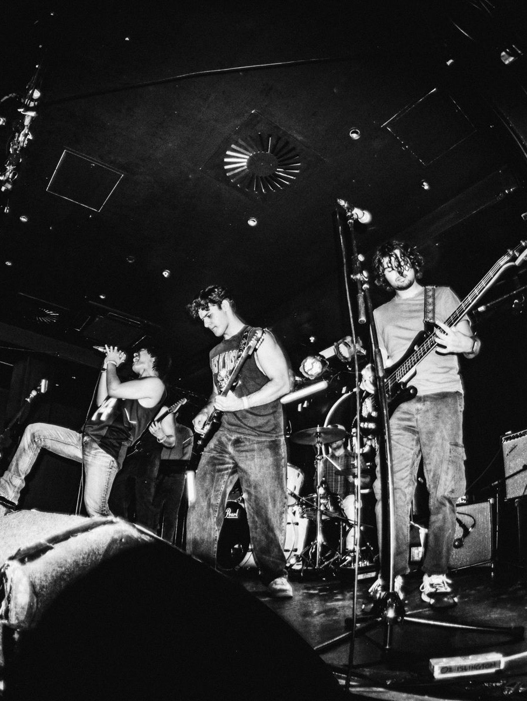
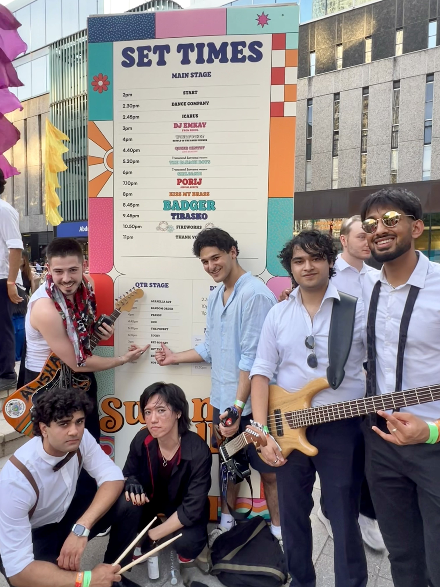
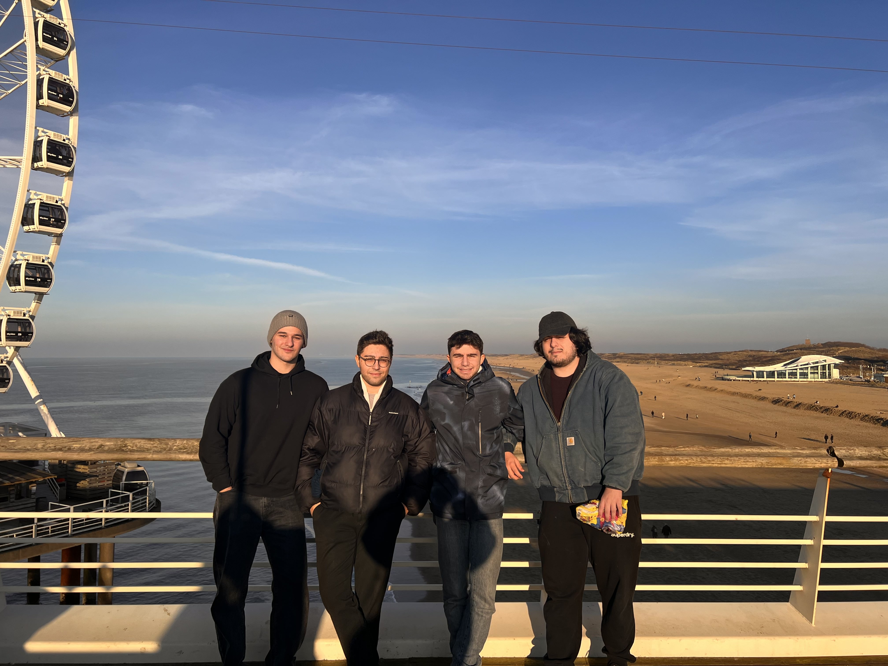
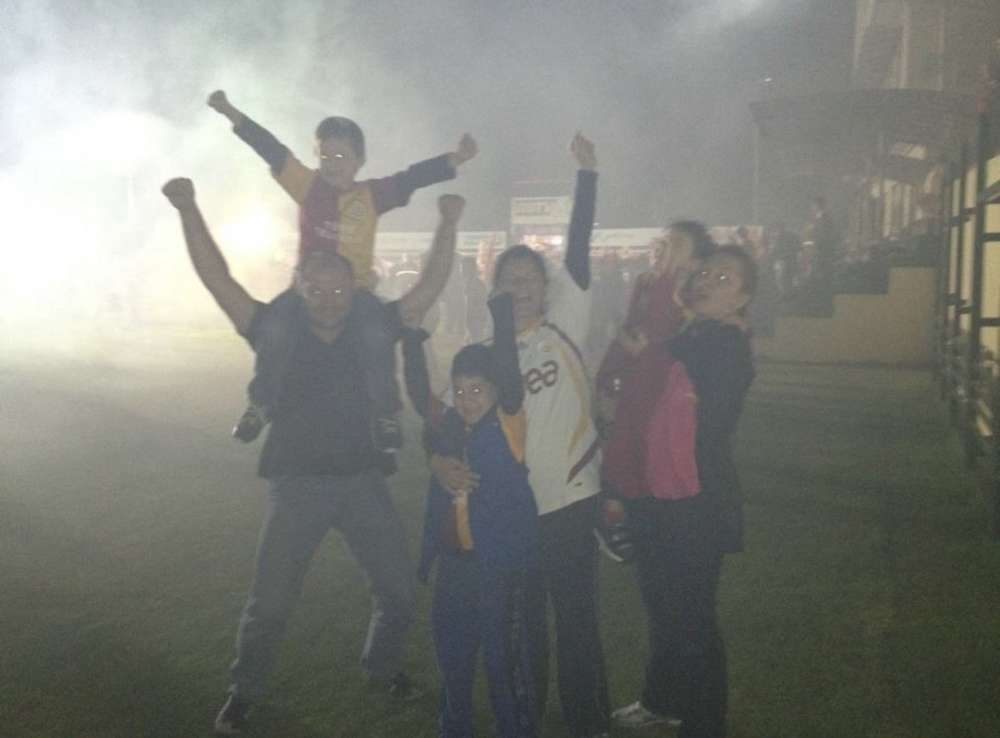
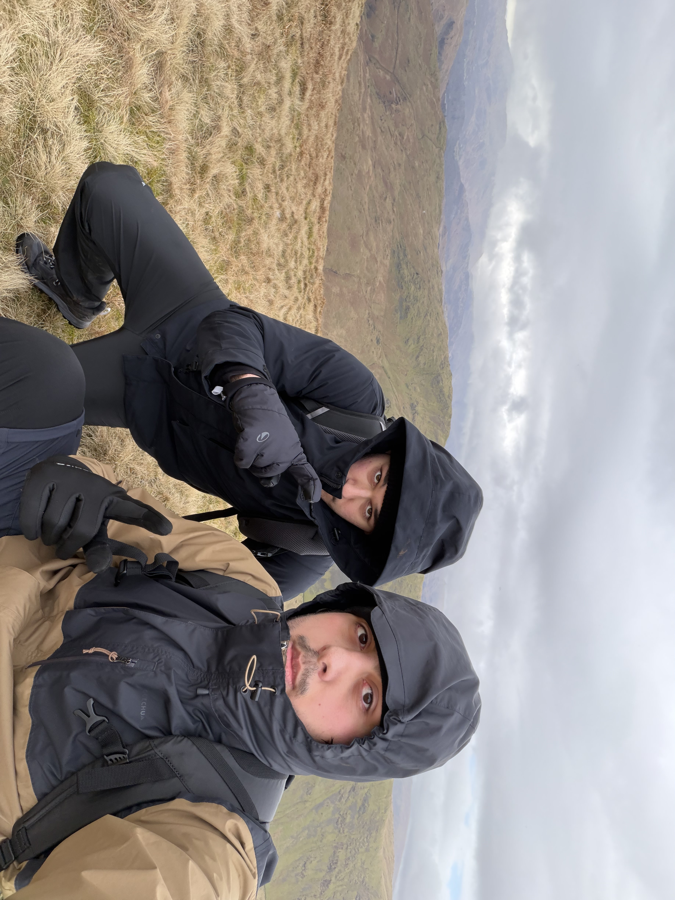

Ege's page
Hi, I'm Ege. I'm a Computing undergraduate at Imperial College London, on track for a Bachelor of Engineering, graduating in 2027.
I'm into high-performance computing, distributed systems, deep learning, physics, and music.
This summer I'll be working at Bloomberg as a Software Engineer Intern in London.
Long-term, I want to work
on systems that sit at the intersection of performance engineering and Deep Learning. If that
doesn't pan out, plan B is to be Miles Davis 2.0.
Outside of work, I play lead guitar in a band called Red Rosary, more on that below.
Reach me at ege.hurturk24@imperial.ac.uk.
Here's my GitHub,
LinkedIn, and my resume.

Me visiting close friends in New York; one of the best trips of my life.
What I'm Into
I am interested in designing high-performance pipelines and machine learning systems. Low-latency design patterns, data structures, and the discipline of dealing with cryptic C++ errors are among my favorite topics to work on and learn. Alongside that, I am increasingly interested in graph neural networks and their applications across fields. Everything is kinda a graph nowadays.
Outside of code, I spend time learning music theory and the architecture of progressive metal
and jazz fusion. I listen to a lot of jazz. My favorite piece is
Beyond music, I am nearly always physically challenging myself: long runs, hiking, tennis, football, and regular lifting. I believe gym boosts my productivity and cognitive thinking a lot, whenever I go gym I leave
accomplished, rejuvenated, and more focused. Locked IN.
As Mustafa Kemal Ataturk says,
A sound mind in a sound body
Projects
- WACC (No one knows what it stands for)

- A full pipeline compiler built in Scala 3 as part of the second year Compilers laboratory at Imperial.
- Multiphase architecture: see above diagram.
- Many optimisations: Local static analyser, tail-recursion optimiser, and a peephole optimiser. Details in my resume.
- PintOS

- Developed core operating system functionality including preemptive scheduling, user process support, and virtual memory management. Details in my resume.
- Working with multithreading while designing & building an OS is a hell of a challenge, learned many lessons about preemption and writing race-free code in C.
- TSNet
- Trained a WaveNet model with my own dataset (I collected using my own Boss Katana amplifier and Shure SM57 mic!). Details on my resume.
- Used my own trained model as a replacement for my physical Tube Screamer mini pedal! The best feeling in the world is to actually use your creation, even though it's not the best one.

Red Rosary
I play lead guitar in Red Rosary, a rock band based in London. We cover 80s, 90s, and 00s rock, metal, and alternative and we are currently writing our first album. The lead single is "Waiting for You."
I have another banger on the way.Live Shows
- Live at O2 Academy Islington
- Live at The Castle, Aldgate East


Where I Want to Go in 2027
- Morocco
- Brazil
- Japan
- Mt. Kilimanjaro
- Kaçkar Mountains
My Favorite Albums
- The Dark Side of the Moon — Pink Floyd
- A Love Supreme — John Coltrane
- Kind of Blue — Miles Davis
- In Rainbows — Radiohead
- Metropolis Pt. 2 — Dream Theather
A Few Favorite Pictures
Bodrum, no filter. Best place on Earth.

Visiting my friend at Delft.

When Galatasaray won the Turkish League and got its 4th star.

Hiking in Lake District, Fairfield horseshoe. First hike, was amazing.